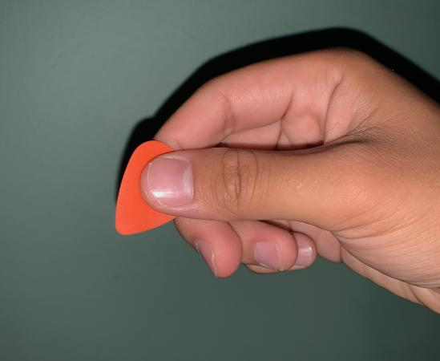
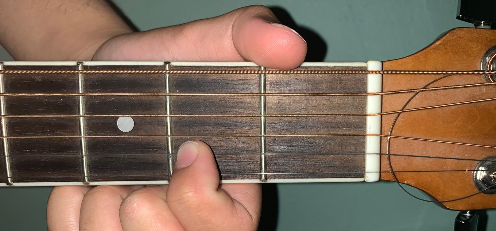

How to Start Playing Guitar
Now that you're familiar with the parts of the guitar, you can start playing. But before you start, make sure you follow these steps to ensure the best possible experience.
1. Hold your guitar correctly
Please Refer to our How to Hold your Guitar section.
2. Tune your Guitar
Guitars need to be tuned every once in a while to ensure that it isn't out of tune. If you play with an out-of-tune guitar, it won't sound desirable.
Start off by slowly turning the tuning peg that is closest to you. At the same time, start plucking the 1st string. You will start hearing the string's pitch change. It will sound lower or higher depending on what orientation you turn the peg.
Now refer to the video below, and turn the tuning peg so that the 1st E string sounds as close as possible to the E string in the video. Now move on the next tuning peg and repeat for the next string, making sure each string sounds as close as possible to the respective strings in the video.
3. Grab a pick
A guitar pick is not necessary to play guitar; however, if playing with your just your fingers is uncomfortable, then a pick might be useful.
To hold a pick, grasp the thick end of the pick between your thumb and index finger. When strumming, hold the pick firmly so that it doesn't fall out of your hands.
4. Practice strumming
Using your hand that is on the body of the guitar, use your pick (or if you're not using a pick, use your index finger's nail) and quickly run down all six strings, so that they end up sounding at about the same time. To strum up, use your pick, (or your thumb's nail), and run up from the last E string to the top.
Since we're just starting off, don't worry if the strumming is too harsh or too soft. Just focus on the actual motion of it. One thing to note is that when strumming, your whole forearm should be moving, not your wrist.
5. Finger placement
While strumming's cool, you probably realized that everytime you strum, it sounds the exact same everytime. In order to actually make the sounds of the guitar as we know it, we need our other hand's fingers in certain positions on the fret board.
To start off, place your index finger on the B string (5th string down), and on the 2nd space between the frets. It should look like this.
Now strum with your other hand. Notice how it sounds different than when you strum without your fingers on the fretboard.
Now try experimenting by putting your finger on different places on the fret board. Don't worry if it doesn't sound good. Just focus on the fact it sounds different depending on where you place your index finger.
Go back to top